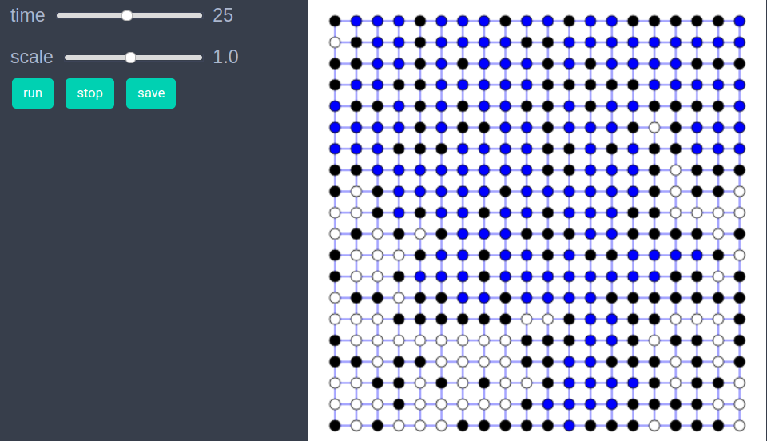

Percolation on a 2d grid graph
using EasyABMStep 1: Create Model
In this model we will work solely with the graph and won't need agents. We initially create a grid graph, and then create our model as follows.
graph = square_grid_graph(20,20);
model = create_graph_model(graph, open_nodes=Int[], percolated=false, prob=0.0)Step 2: Initialise the model
In the initialiser! we make the node at the upper right corner of the grid graph to be open and also give it color cl"blue" to indicate presence of water at this node. All other nodes are kept closed and their color is set to cl"black".
function initialiser!(model)
model.properties.num_nodes=length(vertices(model.graph))
for node in vertices(model.graph)
if node==model.properties.num_nodes #last node is open & has water
model.graph.nodesprops[node].open=true
model.graph.nodesprops[node].color=cl"blue"
else #all other nodes are closed
model.graph.nodesprops[node].open=false
model.graph.nodesprops[node].color=cl"black"
end
end
push!(model.properties.open_nodes, model.properties.num_nodes)
model.properties.percolated=false
end
init_model!(model, initialiser= initialiser!, props_to_record = Dict("nodes"=>Set([:color])))Step 3: Defining the step_rule! and running the model
In this step we implement the step logic of the percolation model in the step_rule! function and run the model for 50 steps. At each step of the simulation we make 10 randomly chosen nodes open and let water flow to them (i.e. assign them blue color) if connected to any source node (i.e. blue colored node).
function let_water_out!(node, model)
water_source_nodes=[node]
loop_condition = true
n = model.properties.num_nodes
while length(water_source_nodes)>0 && loop_condition
nd = pop!(water_source_nodes)
nbrs = neighbor_nodes(nd, model)
for nbr in nbrs
if (model.graph.nodesprops[nbr].open)&&(model.graph.nodesprops[nbr].color==cl"white")
model.graph.nodesprops[nbr].color = cl"blue"
if (nbr<=sqrt(n))
model.properties.percolated=true
model.properties.prob = length(model.properties.open_nodes)/n
loop_condition=false
break
end
push!(water_source_nodes, nbr)
end
end
end
end
function let_water_in!(node, model)
nbrs = neighbor_nodes(node, model)
n=model.properties.num_nodes
for nbr in nbrs
if model.graph.nodesprops[nbr].open && (model.graph.nodesprops[nbr].color==cl"blue")
model.graph.nodesprops[node].color = cl"blue"
if (node<=sqrt(n))
model.properties.percolated=true
model.properties.prob = length(model.properties.open_nodes)/n
return
end
break
end
end
end
function step_rule!(model)
num=0
n=model.properties.num_nodes
percolated = model.properties.percolated
#open 10 nodes per step
while (num<10) && (length(model.properties.open_nodes)<n) && (!percolated)
node = rand(1:n)
if !(model.graph.nodesprops[node].open)
num+=1
model.graph.nodesprops[node].open = true
push!(model.properties.open_nodes, node)
if (node<=n)&&(node>=(n-sqrt(n)+1))#upper most row
model.graph.nodesprops[node].color=cl"blue"
else
model.graph.nodesprops[node].color=cl"white"
let_water_in!(node, model)
end
if (model.graph.nodesprops[node].color == cl"blue") && !(model.properties.percolated)
let_water_out!(node, model)
end
percolated = model.properties.percolated
end
end
endrun_model!(model, steps = 50, step_rule = step_rule!)Step 4: Visualisation
In order to draw the model at a specific frame, say 4th, one can use draw_frame(model, frame = 4). If one wants to see the animation of the model run, it can be done as
animate_sim(model)
The code below calculates the average probability at which percolation occurs for an ensemble of model runs.
function calculate_percolation_probability(;grid_graph_size=20, attempts=10)
n=grid_graph_size
frames=Int(ceil(n^2/10)) # every step 10 random nodes are opened, so n^2/10 steps must be enough
percolation_probs = Float64[]
for _ in 1:attempts
graph = square_grid_graph(n,n)
model = create_graph_model(graph, graphics=false, open_nodes=Int[], percolated=false, prob=0.0) #don't need visualisation so set graphics=false
init_model!(model, initialiser= initialiser!)
run_model!(model, steps=frames, step_rule = step_rule! )
if model.properties.percolated
push!(percolation_probs, model.properties.prob)
end
end
percolation_probs
end
probs=calculate_percolation_probability(grid_graph_size=20, attempts=80);
sum(probs)/length(probs)
0.5919687499999999References
- https://en.wikipedia.org/wiki/Percolation_theory